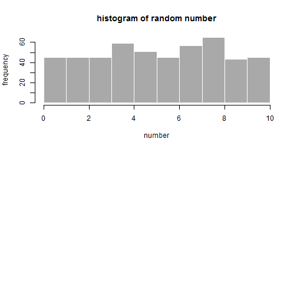
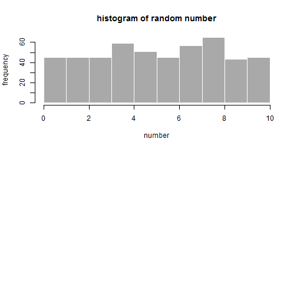
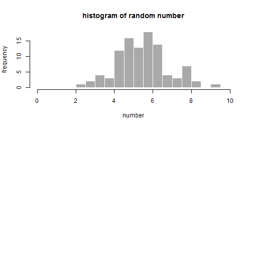

With a box of numbers 1 to 10, we randomly draw a number with replacement from the box and repeat for 500 times.
Make the frequency plot (histogram) of each number, the distribution is NOT normal.

Tan Woei Ming
Coursera Course Project
With a box of numbers 1 to 10, we randomly draw a number with replacement from the box and repeat for 500 times.
Make the frequency plot (histogram) of each number, the distribution is NOT normal.

With the same setting, we randomly draw (N=) 5 numbers (with replacement), then find the average. Repeat for 100 times.
Make the frequency plot of each set of number average, the distribution become normal.

Central Limit Theorem shows that the distribution of N-sample average becomes normal distribution, compared to individual drawing (NOT normal).
The theorem also has below properties:
The mean are the same as the population mean.
The standard deviation (sd) is 1/sqrt(N) of the population sd.
Normal distribution (Magic!!!)
For illustration apps:https://twming.shinyapps.io/datascience-dataproducts/
What is mean of N-sample draw?
It is the same set of number!
Yes, Central Limit Theorem shows us they are the same as population mean!